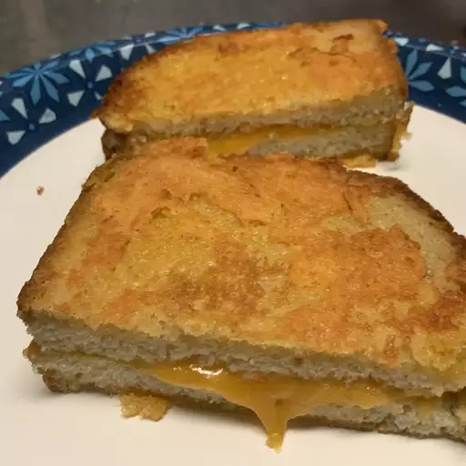

Sandwich

Description:
Two pieces of bread with grilled cheese between them.
Ingredients
- 2 tablespoons butter, divided
- 2 slices white bread
- 1/2 cup shredded Cheddar cheese, divided
Steps
- Melt 1 1/2 tablespoons butter in a large nonstick skillet over medium-low heat. Place
bread slices over hot butter in the skillet.
- Spread about 1/4 cup Cheddar cheese on 1 bread slice; place other bread slice,
butter-side up, on top of cheese. Spread about 2 tablespoons cheese on top of sandwich.
- Melt remaining 1/2 tablespoon butter in the skillet next to sandwich. Flip sandwich
onto melted butter, cheese-side down. Spread remaining cheese on top of sandwich. Cook
until cheese on the bottom is crispy and caramelized, 3 to 4 minutes. Flip sandwich and
cook until cheese is crispy and caramelized on the other side, 3 to 4 minutes more.